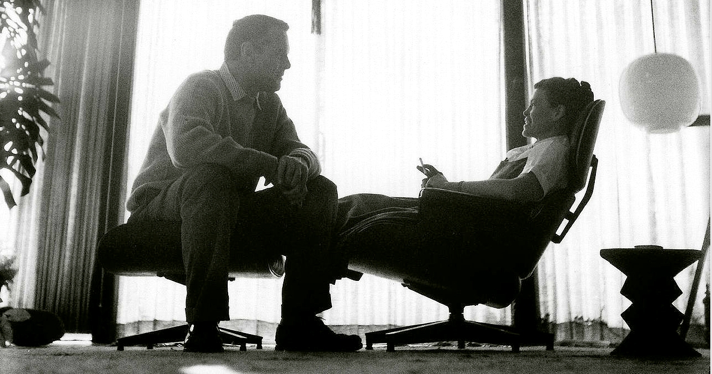

Dr.
Martens
wie
kent
ze
niet,
dagelijks
wor-
den
deze
boots
door
iedereen
gedragen,
maar
wat
veel
mensen
niet
weten….
PUNK.
Deze
schoenen
die
iedereen
dagelijks
draagt
alsof
het
de
gewoonste
zaak
van
de
wereld
is,
zijn
een
trend
geworden
in
de
jaren
70
toen
de
punk
cultuur
ontstond.
Daarnaast
nam
ook
de
kleurentelevisie
waar
men
nu
echt
niet
meer
zonder
zou
kunnen
in de jaren 70 zijn intrede.
DISNEY
,
hier
is
haast
iedereen
wel
is
ge-
weest
en
nog
bezoeken
er
dagelijks
duizen-
den
mensen
dit
avontuur,
in
de
jaren
70
opende
Disney
zijn
welberoemde
Magic
Kingdom.
Dit
is
een
van
de
vier
attractiepar-
ken
van
Walt
Disney.
Het
was
het
eerste
park
en
werd
geopend
op
1
oktober
1971.
Door
de
jaren
heen
werd
het
pretpark
steeds
meer bezocht.
Wat
doe
je
in
het
weekend
met
slecht
weer?!
Ja
precies,
de
meubelboulevard!
Ook
deze
ontstond
in
de
jaren
70.
Maar
niet
te
vergeten
het
belangrijkste,
wij
de
jonge-
ren.
Zonder
de
jaren
70
hadden
wij
mis-
schien
wel
nooit
onze
mooie
duidelijke
stem
mogen
laten
horen.
Kortom
de
jaren
70
was
eigenlijk
ons
begin,
je
wilt
niet
weten
hoe
vaak
ik
van
mijn
ouders
hoor;
hee
dat
had-
den
wij
toen
ook
al,
echt
om
gek
van
te
wor-
den!
Maar
ik
ben
bang
dat
ik
dit
nog
wel
een
aantal
jaar
aan
moet
horen,
want
retro
is
hip!
